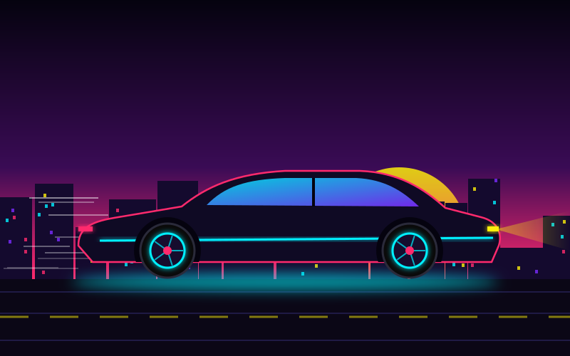

Galerie
Neonové scény z temné budoucnosti – město, ulice, implantáty, rychlá auta i kybernetické oko.
Všechny obrázky jsou původní ilustrace ve formátu SVG, které vytvořila umělá inteligence. Jsou inspirované cyberpunkovou estetikou a nejsou to oficiální obrázky ze hry.


